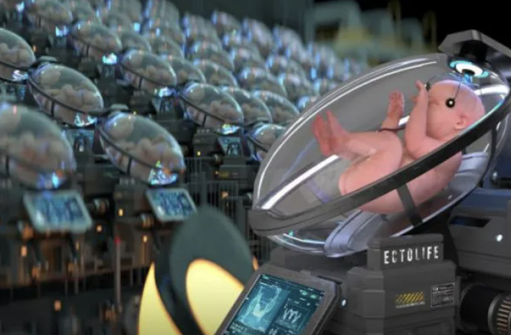

Although it might seem science fiction, but here in the near future there will be a breakthrough in this technology There has been recent development in this area of creating an artifical womb or device that can house a developing Embryo into a viable fetus. This technology will have many applications in the future. Being able to control growth and development outside of a natural womb will greatly reduce pregnancy complications and also fertility.
However with such great power over birth there will need to be rules and regulations to govern this great technological advancement in human development. Currently we do not have the technology to advance human development beyond 14 days. Also law prohibts such development any further than the 14 day period. There will need to be advancement in technology to grow a viable embryo past 14 days and beyond to full term development. Although this technology is in its infancy (no punt inteded) it will redefine our ability to create.
